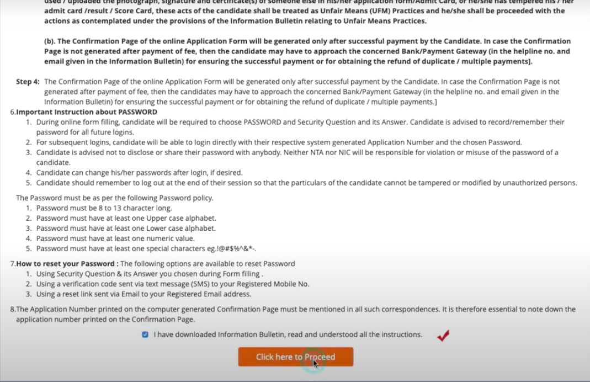
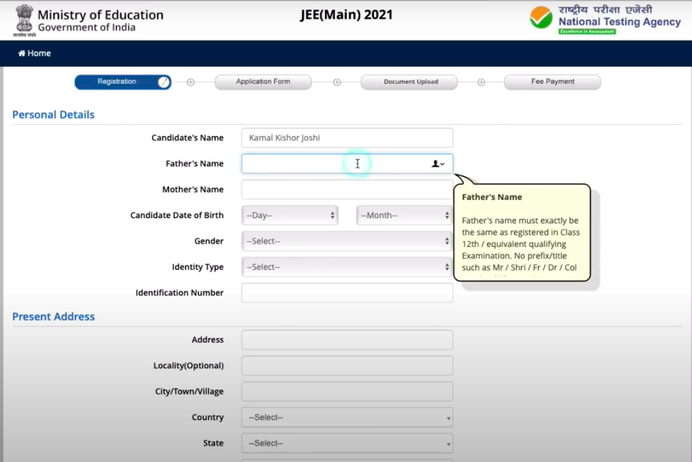
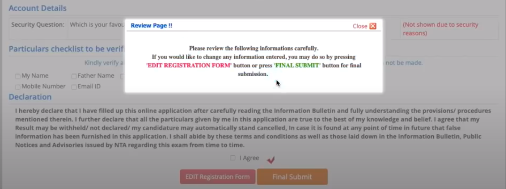
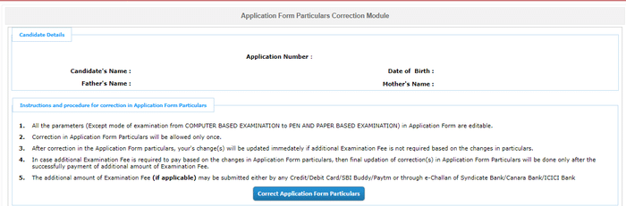

Recent updates and notices
- NTA(National Testing Agency) has released he JEE main Admit card on Febuary 11.
- Inorder to get admit card go to the website jeemain.nta.nic.in
- JEE main has relaxed its eligibility criteria for Admissions in IIT, NIT, GFTis and SPAs. 75% in Class 12th is not mandaory for Admission in NITs,IITs,GFITs and SPAs
Quick links
- JEE ADVANCED
- Colleges
- Payment
- Exam Center
- Syllabus
- Documents
- Marking and questions
JEE
- JEE stands for Joint Entrance Examination. (It is quite confused with IIT. We will clear the confusion in the section below)
- JEE is conducted by NTA (NAtional Testing Agency). The same agency which conducts NEET.
- JEE is conducted twice a year.
- JEE main: JEE main is first phase of examination. JEE main is carried out twice a year all across the country during January and April.
- JEE advanced: JEE advanced is second phase of examination. It is carried out by all 23 IITs following rotational basis. The exam is conducted for admission in IITs.
There is confusion on what IIT and JEE are.So, to be clear IIT are autonomous universities.
Each IIT are university among themselves.They have admission process and they need to refine candidates. So, they conduct examination called JEE in two phase. After first phase of refinement by government IITs conduct scondd phase of examnation themselves.
The examination conducted for masters level in IITs are called GATE.
How many students appear in JEE mains examnation?
We can easily see number of studets appearing in JEE is declining every year whic is a good sign because people are being focused in alternative careear.But speculations made shows that there are nearly 10 lakh people registerd for JEE in 2021.
| Year | Total registrations |
|---|---|
| 2020 | 9,34,000 |
| 2019 | 9,42,000 |
| 2018 | 11,40,000 |
| 2017 | 11,86,000 |
| 2016 | 12,07,000 |
| 2015 | 13.04,000 |
| 2014 | 13,56,000 |
What are engeneering colleges in India like IITs?
- IIT: IIT stands for Indian Institute of Technology is considered most prestigious engeneering institute in India.They are autonomous universities linked up with one other with IIT council.They are moreadvanced in research and technology as well as infrasdtructure than any other institute in India.
- NIT: NITs are also government funded institute. The institute has a 31 universities all universities are autonomous among themselves and are linked with one other by NIT council.They are also much developes in infrastructure like IITs but are not as renowned as IITs. There are some NITs which compete and are even better than many IITs.
- IIITs: Indian Institute of Information Technology are group of institute focused in higher education in India.There are 25 of them and only 5 are givernment funded rest are public-private partnershipped
- GFTIs: Government Funded Institute of Technology is funded by goveernmenn=t of India.The admission to GFTIs are done on the basis of JEE marks and grade 12th marks in the ratio|(60:40) and by JoSSA seat allocation.There are 20 GFTIs across the country.
| IIT | NIT | IIIT | GFTI |
| 23 | 31 | 25 | 20 |
How many students are admitted in IIT and NIT, IIT GFITs?
The total number of seats in IITs, NITS, IITs and GFTIs are:
| Institute | Total seats | Female suplementary seats |
| IIT | 11279 | 800 |
| NIT | 17967 | 653 |
| IIIT | 4023 | |
| GFTIs | 4683 | 20 |
The detailed information on seats is in colleges for engeneering
What are syllabus of IIT/JEE?
There are three subjects in JEE mains and advanced:
- Maths
- Chemistry
- Physics
All three subjects are equally important and carry equal weightage in both JEE mains and advanced.
For more details in marking sceme and exam pattern click here
What is marking sceme of JEE mains and advanced?
There is 4 marks for a correct answer and a -1 for a wrong answer but theere is no negative narking for any unattempted questions in JEE mains.
The maring sceme of JEE advanced is complicated and depends on type of question asked in examination.For detailed information click here
JEE mains examination
- JEE main examinaton is conducted by NTA(National Testing Agency)
- JEE main is conducted for admission in IIT, NIT, IIIT, GFIT
- JEE main is conducted twice a year January and April
- Any person interested in the field of engeneering should give a try for JEE mains and advanced.
- JEE main and advanced examination are held in online mode only and students are required to give computer based exam.
Information for foreign nationals
- Foreign ntionals have a very good scope to get admitted in IITs and NITs
- There is 10% of supplementary seats for foreign students in IIT
- The seats is reserved in all categories of engeneering
- Unlike previous years students should give JEE mains to get admitted in NITs too.
- Exams of JEE mains and advanced are conducted even outside India.
- Even being very good for engeneering institute JEE attracts very less foreign nationls
- We promote IITs and NITs over many other oversees university and recommend students in Nepal to apply for JEE.
- In IITs and NITs you can adapt easily have exposure to best teaching and learning environments and can also have cheap periodic visits to your place in holidays.
- It is cheaper to study in IIT than in any foreign universities.
Eligibility criteria for JEE mains
The JEE mains is conducted twice a year and the eligibility criteria for both the exams are same:
- Age limit: the candidates should be born on or after October 21, 1995.
- Number of attempts: The candidates can appear for JEE advancd foe three consecutive years that is for 6 times.A candidates can give six examinations.
- Class 12: The candicdates should have appeared or compleated the +2 examination.The students should be appearing in recognized board or universities.
The same rules applies for foreign nationals.Their +2 should be completed from recognized board or universities.
Further qualification details on JEE main
-
Number of attempts in JEE mains:
- Candidates can appear in JEE mains for 3 attempts ie for three consecutive years after passing +2.
-
Nationality:
Any studens who are citizen of India, or fall under the category of Non-Residential Indian(NRI) or Overseas Insian(OCI) or Persons of Indian Origin(PIO) can fight for JEE mains.
Foreign studens can also apply for JEE mains and should specify their nationality. - Educational requirements: Educational qualification varies according to the paper students are applying for:
For B.Tech students need to give exam in paper 1 and must have studied Physics and Mathmatics as a compulsory subjects in Class 12th and Chemistry/Biotechnology as a compulsory subject.
For B.Arch and B.Planning students need to give paper 2A and paper 2B respectively and they should have studied Physics,Chemistry and Mathmatics as a compulsory subjects. - Marks required: There is no minimum marks requirement to appear in JEE mains.
- Year of appearence of +2 : Students should have appeared in +2 in either 2019,2020,2021.
Same eligibility criteria holds true for foreign nationals except the identification document which is explained below.
Documents required to register for JEE mains
- Class 10th and 12th academic details
- Aadhaar Card or Aadhar Enrolment number.
- Sanned Images of Passport, voter ID or any valid Govt ID
- Valid email ID and mobile number
For foreign students passport or identification documents do while filling the form but it is mandatory to have passport to apply for admission.
But, do refer to official website before filling up the form.
Registration fees for JEE mains
| Category | fees |
|---|---|
| General & OBC Boys | INR 650 + GST & service charges |
| SC/ST/PWD/Transgender/girls | INR 325 + GST & service tax |
| Candidates from SAARC countries | USD 75 |
| Candidates from Non SAARC countries | USD 75 |
A guide to fill application form
Official site for filling JEE mains application form is jeemain.nta.nic.in
Candidates need to visit the website to fill up the form. The form can not be filled offline.Canddiates are advised to keep the documents ready before filling up the jee main application form.
Step wise description to fill up the form.
There are four steps to complete the registration process. All the seps are described in full details below:
Registration form
- Log on to the official wb site.But make sure you meet the eligibiliity criteria.
- There are two tyes of candidates registreering for JEE mains. One who have previously appeared in JEE mains and who have not registered previously.
- For candidates who have registered previously do not need to register again they can just Sign in with their Application number, Date of birth and Security Pin (No, need to confuse with security pin it is just a system generated captcha.)
- For fresh candidates they should register to the official websites and follow the following :
- Click on the link to apply for JEE Main 2021
- We advise the students to read the notice before filling up the application form:

- Click the Click here to proceed box to proceed.
- Fill the application form. The form contains information like candidates name, Fathers name, Mother's Name and other personal dentification information.

- Make sure you put a valid email id and a valid phone number. You need it incasse you forget your password.
- Fill the academic details and exam related details correctly with exam centers. To know more aboout exam centers click here
- After that you need to review your application details just check whether all the credientials you have filled is correcct or not and corrrect the wrong information and press on final submit.

- The application number will be generated and next step will show you how many steps have been completed.
Application Form
- The application form asks for some details like , Father's qualiification, Mothers qualificaton, Father annual Income mothers annual income occupation guardian annual income.
.png)
Upload Image
- Click the buttom on "Upload Scanned Imges"
- Upload the photo and signatures one by one.
- Click on preview to change the image
Photograph
- Photograph shold be passport sized with name and date of photograph taken.
- Photograph should can be either black and white or color but with clear background and contrast.
- Photograph shoould be in jpeg or jpg format.
- spectacles are allowed in photograph.
- The scanned photograph should be either 10 KB or 200 KB in size.
- Besides remember photograph should not be too old & match the identity of the person.
Signature
- Signature shoould be done in white paper only
- Sign in the box of 3.5X1.5 cm .
- The scanned image shold be in jpg or jpeg format.
- The scanned image should be in between 4 KB to 30 KB in size.
Documents
- The documents should be in either in jpg/ jpeg format.
- The size of document should be in between 50 KB to 500 KB.
FEE PAYMENT
In order to pay exam fee you should cllick in the link "Pay exam fee".
Follow the required process suitable for you to pay the fee.
Please, give us a try. 🙏 🙏 🙏
Correction of Application form
andidates can correct their application form when correction window is open.But it is always to remember that not all details can be corrected.The details hat can be corrected are specified as:
- Candidates name
- Paper (candidates can change their paper of examination from paper 1 to paper 2 or add both paper
- Date of birth
- Contact Number
- Uploaded photograph and signature
- Exam center preferences
Application form corection steps.
- Visit the website jeemain.nta.nic

- Click on application Form Correction link
- Enter the aplication Number, Password and Security Pin.
- Correct the required fields
- For image discrepencies click on
Remove Image Discripencies link in jeemain.nta.nic website
Login using your Login details
Rectify your photos
JEE main helpline
JEE main helpline is at ntanationalttestingagency@gmail.com.